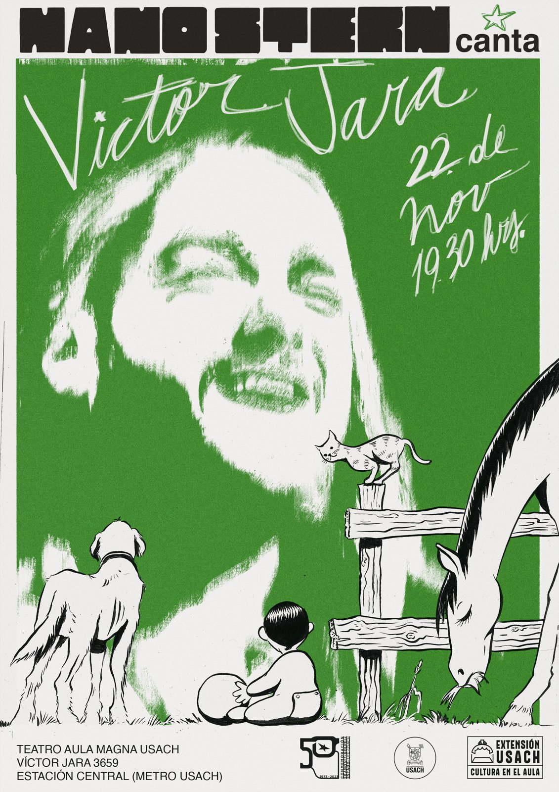

Nano Stern canta a Víctor ...

Afiche para "Nano Stern canta a Víctor Jara", 22 de noviembre, Teatro Aula Magna USACH — Extensión USACH, Cultura en el Aula, conmemoración de los 50 años del golpe de Estado (1973-2023).

Afiche para "Nano Stern canta a Víctor Jara", 22 de noviembre, Teatro Aula Magna USACH — Extensión USACH, Cultura en el Aula, conmemoración de los 50 años del golpe de Estado (1973-2023).